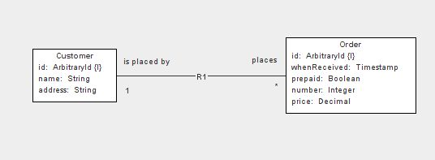
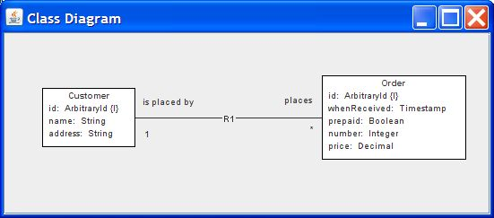
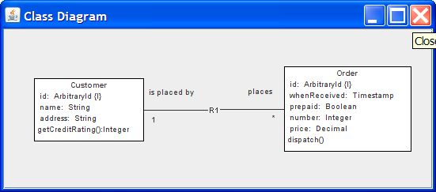
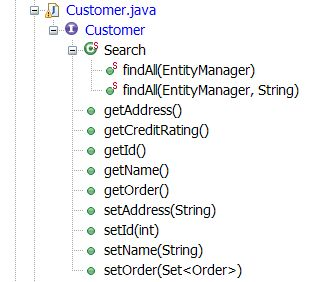

Consider this class diagram:

To define this system create this class:
package moten.david.uml.xuml.model.example.order;
import java.io.IOException;
import model.Class;
import model.Primitive;
import moten.david.uml.xuml.model.Generator;
import moten.david.uml.xuml.model.Multiplicity;
import moten.david.uml.xuml.model.util.SystemBase;
public class Shop extends SystemBase {
private static final String schema = "SHOP";
private static final String systemName = "Shop";
public Shop() {
super(schema, systemName);
initialize();
}
private void initialize() {
model.Package pkg = createRootPackage("shop", "shop system");
Class order = createClass(pkg, "Order", "a purchase order");
createPrimaryKey(createAttribute(order, "id", Primitive.ARBITRARY_ID),
Generator.GENERATED_VALUE);
createAttribute(order, "whenReceived", Primitive.TIMESTAMP);
createAttribute(order, "prepaid", Primitive.BOOLEAN);
createAttribute(order, "number", Primitive.INTEGER);
createAttribute(order, "price", Primitive.DECIMAL);
Class customer = createClass(pkg, "Customer", "shop customer");
createPrimaryKey(
createAttribute(customer, "id", Primitive.ARBITRARY_ID),
Generator.GENERATED_VALUE);
createAttribute(customer, "name", Primitive.STRING);
createAttribute(customer, "address", Primitive.STRING);
createAssociation("R1", createAssociationEndPrimary(order,
Multiplicity.MANY, "places"), createAssociationEndSecondary(
customer, Multiplicity.ONE, "is placed by"));
}
public static void main(String[] args) throws NumberFormatException,
IOException {
Shop shop = new Shop();
shop.view("Shop.ini");
}
}
Before you run the viewer you need to indicate where you are going to save the setttings for the view of the Shop system. The file is currently set to be Shop.ini in the java working directory. Change it if you like.
To view the system, run the above class (the main method calls the viewer). You will need to reposition the elements but when you close the viewer the positions will be saved automatically. You may want to change the name of the location of the settings file in the main method.

Add this code to the end of the initialize() method:
createOperation(order, "dispatch", "dispatches the order", null, false);
createOperation(
customer,
"getCreditRating",
"gets the credit rating",
"Integer", false);
Run the viewer and we see the new operations in the classes.

xUmlCompiler generates
package moten.david.uml.xuml.model.example.shop;
public class ShopGenerator {
public static void main(String[] args) throws Exception {
Shop shop = new Shop();
shop.generate("temp/shop");
}
}
All classes will be written to the directory temp/shop. Change it if you wish. Create the directory if it does not exist.
Run the main method in the above class and classes will be generated as below:

All methods and state machine entry points should be implemented by your behaviour classes.
Here's the behaviour class for the Order class:
package moten.david.uml.xuml.model.example.shop;
import shop.Order;
import shop.actions.OrderActions;
public class OrderBehaviour implements OrderActions {
private Order order;
@Override
public void dispatch() {
System.out.println("dispatching order " + order.getId());
}
@Override
public void setOrder(Order order) {
this.order = order;
}
}package moten.david.uml.xuml.model.example.shop;
import shop.actions.OrderActions;
import com.google.inject.AbstractModule;
public class ShopInjectorModule extends AbstractModule {
@Override
protected void configure() {
bind(OrderActions.class).to(OrderBehaviour.class);
}
}package moten.david.uml.xuml.model.example.shop;
import shop.ObjectInjector;
import com.google.inject.Guice;
public class ShopLauncher {
public static void main(String[] args) {
// enable injection of actions
ObjectInjector.setInjector(Guice
.createInjector(new ShopInjectorModule()));
}
}